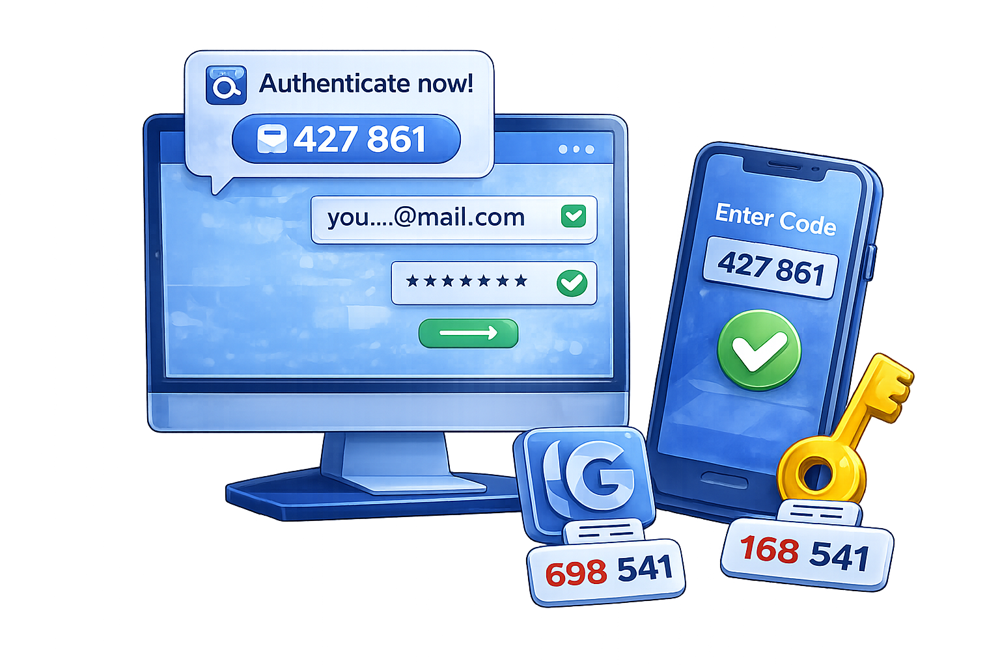

Internet Segura
Internet Segura
Uma camada extra de segurança que protege suas contas contra invasões.
Adiciona uma segunda camada de segurança além da senha.
Como identificar: Após digitar a senha, o sistema pede um código extra.
Exemplo: Código enviado por SMS ao fazer login.
O código muda a cada acesso.
Tentativa de invasão: Você recebe um código sem tentar entrar.
Exemplo: Notificação inesperada de código.
Protege contas importantes com dados pessoais.
Importante para: E-mails usados para recuperar senhas.
Exemplo: Conta principal vinculada a outras.
São mais seguros que SMS.
Vantagem: Código gerado direto no aplicativo.
Exemplo: Novo código a cada 30 segundos.
